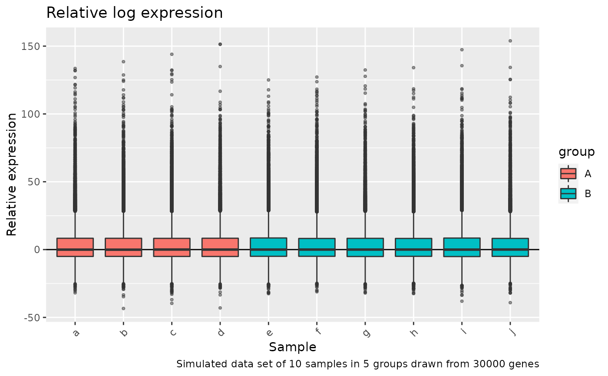

plot the relative log expresion for each sample. This plot is useful for comparing normalization procedures between groups.
Arguments
- data_matrix
log2 transformed counts, as a
data.frameormatrix- sample_sheet
a sample_sheet object that describes the sample metadata
- col_by
a column name from
sample_sheetto colour the plot by- title
a title for the plot. Leave blank for none, or a character string
- caption
caption for the plot. Leave blank for none, or a character string
Examples
m <- -log2(replicate(10,rgamma(3e4, 0.1))) %>%
magrittr::set_colnames(letters[1:10])
sample_sheet <- data.frame(
sample_id = letters[1:10],
group = c(rep("A",4), rep("B",6))
)
RLEplot_mod(
m,
sample_sheet,
col_by = "group",
title = "Relative log expression",
caption = "Simulated data set of 10 samples in 5 groups drawn from 30000 genes"
)
#> Joining, by = "sample_id"
